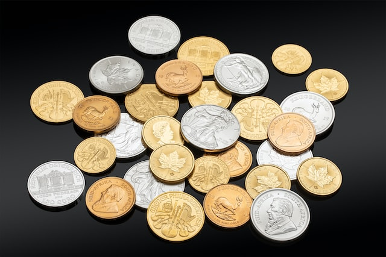
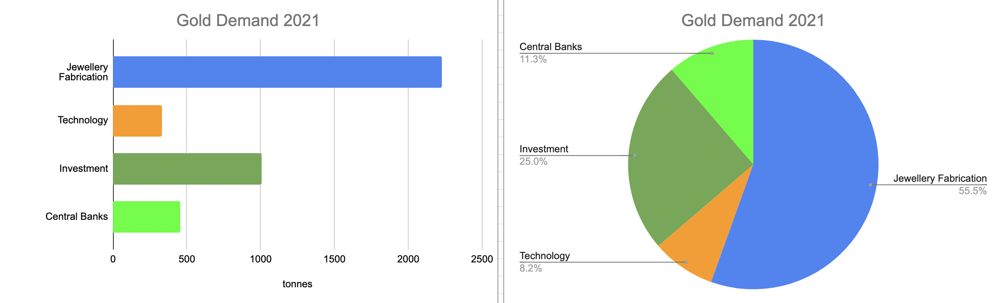
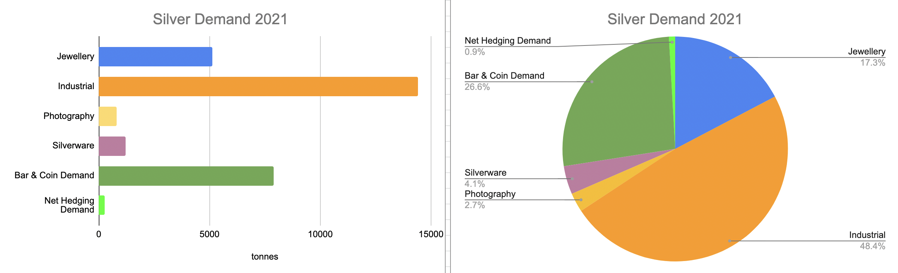
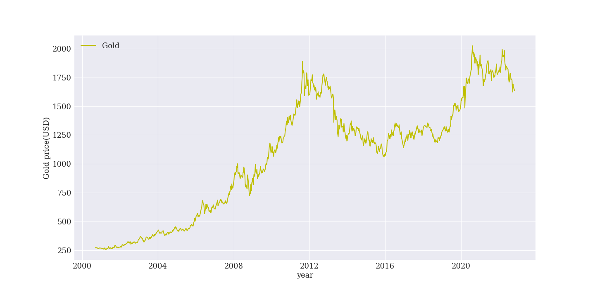
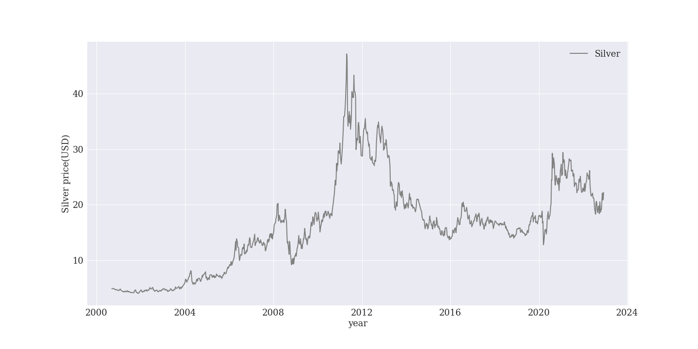
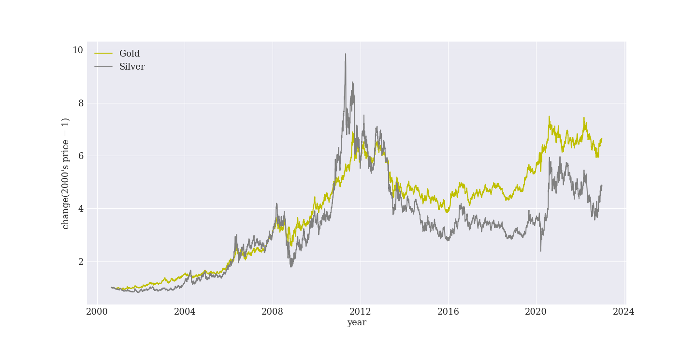
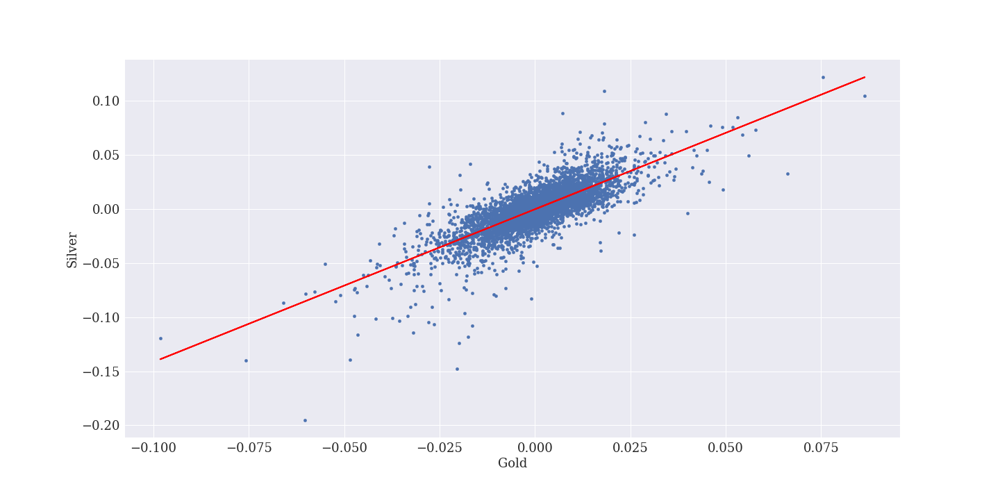
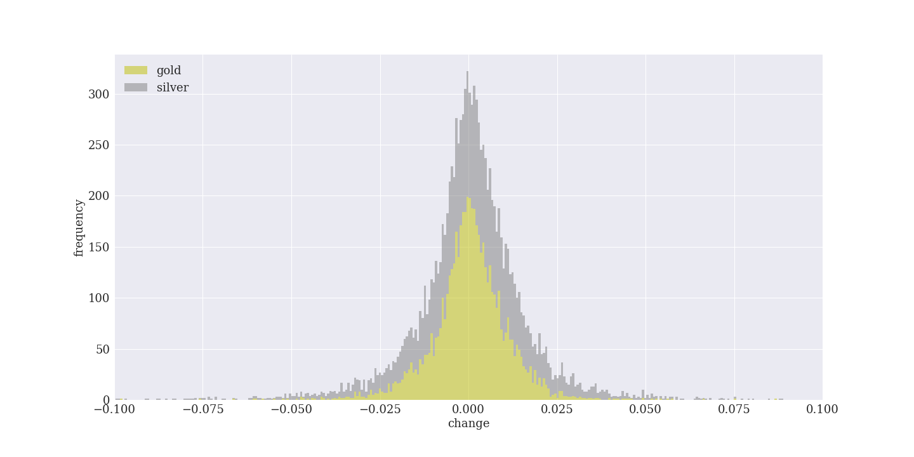
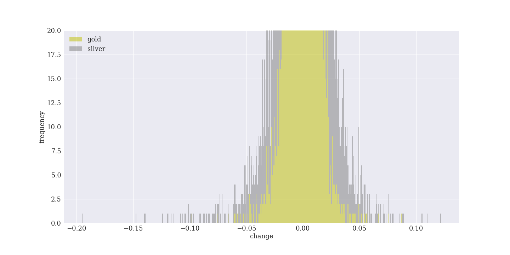
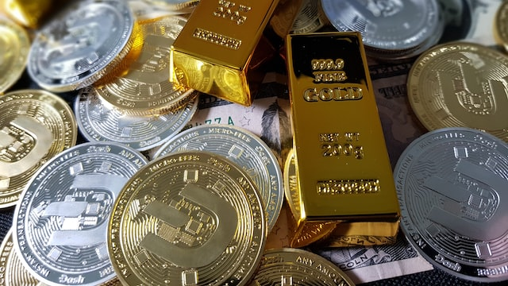

永遠の価値をもつ金 vs 噴水相場の銀 あなたはどちら派？
2023-01-01 by 内田裕之
- 「金と銀、投資するならどちらがいいの？」
- 「儲かる投資先を知りたい！」
この記事はそんな方へ向けて書いています。
こんにちは。
金と銀への投資で資産形成に励むうっちゃんです。
金と銀、どちらに投資したらよいか悩んでいませんか？
実はどちらもコモディティですが、特徴が全く異なるのです。
この記事では投資で見た金と銀の違いを紹介します。
資産形成に役立つと嬉しいです。
この記事は内容に広告・プロモーションを含みます。
投資で見る金と銀の違い
金と銀はどちらもコモディティであり、2023年に大きな値上がりが期待されています。
（参考：ロバートキヨサキが「2023年に金（ゴールド）は2倍に値上がりする」と予想した理由とは？）
でも、どんな違いがあるのか分かりづらいですよね。
そこで、投資で見た金と銀の違いを紹介します。
需要の違い
金の統計情報はGOLD HUBに掲載されています。
例えば需要を調べると、半分以上は宝飾品に使われていることが分かります。
（参考：Gold supply and demand statistics）
一方で銀の統計情報はSILVER INSTITUTEに記載されています。
需要を調べると、半分以上は工業製品に使われていることが分かります。
この違いから、銀は景気の影響を受けやすいといえます。
価格の違い
2022年12月31日時点で金は1824米ドルです。
一方で銀は24米ドルであり、金よりも大幅に安いです。
値動きの違い
価格変化を比較するために、2000年8月30日の価格を1として比較したのが下図です。
黄色は金、灰色は銀です。
両者とも似たような値動きをしています。
銀のほうが大きな上昇率であり、2011年には10倍にもなっています。
価格の相関を見てみましょう。
金、銀それぞれの価格変化率を散布図でプロットします。
横軸が金価格の変化率、縦軸が銀価格の変化率です。
相関係数は0.78であり、かなり高い相関があります。
したがって金と銀はほぼ同じ方向に変化するといえます。
さらにヒストグラムでも比較します。
横軸は日々の価格変化率、縦軸は頻度です。
金よりも銀の頻度が大きいことが分かりました。
さらに拡大したのが下図です。
大きな変動率でも銀のほうが多いことが分かります。
つまり銀のほうが価格変動が大きく、頻度も多いことが分かりました。
劣化しやすさの違い
純金は比較的劣化しにくい金属です。
しかし、銀はすぐに黒くなります。
酸化銀は黒いので、空気中で酸化するのかもしれません。
何度も手に取ったり触れたりしていると手の皮脂が付着してしまい、劣化の原因にもなりかねません。
直接手で触らないこと、熱や水が当たらない場所で密閉して保管しましょう。
市場規模の違い
2021年の銀の需要は約30,000トンでした。
銀価格の平均は1オンスあたり約25ドルでしたので、金額に直すと約262億ドルです。
一方で金の総需要は約4,020トン。
これに対し金の平均価格は1オンス＝1,798ドルほどでしたので、金額に直すと約2,550億ドルです。
このことから銀市場は、金の10分の1ほどしかなかったことがわかります。
（参考：金とは一味違う「銀」相場。短・中期的に上昇傾向も、問題はその先だ＝田中徹郎）
市場規模が小さいほど価格の上げ下げが大きくなります。
例えるなら市場規模はお風呂の広さであり、価格は水位です。
同じ人が湯船に浸かるとき、小さいお風呂なら水位は大きく上がります。
逆に温泉ほど広いお風呂なら、水位はほとんど変わらないでしょう。
市場規模が小さい銀は投資マネーが流入すると大きく価格上昇しやすいのです。
金と銀のどちらがおすすめ？
違いを知った上でどちらに投資するのがよいでしょうか？
私は目的に合わせて投資することをおすすめします。
価値の保存なら金
金は景気の影響を受けにくいので、不景気でも価値保存の手段に使えます。
永遠に価値を失うことはないので、家族にひとつ資産として保有することをおすすめします。
大きく稼ぐなら銀
銀は市場規模が小さく、価格上昇の恩恵を受けやすいです。
短期で稼ぐなら銀のほうがおすすめです。
実際、ロバートキヨサキも2023年に銀は3倍、金は2倍になると予想しています。
（参考：ロバートキヨサキが「2023年に金（ゴールド）は2倍に値上がりする」と予想した理由とは？）
銀のほうが狙える利益が大きいため、これから狙って集中投資するのも面白いと思います。
まとめ
今回は投資で見た金と銀の違いを紹介しました。
- 金は永遠の価値をもっており、景気に左右されにくいので資産価値が大きい。
- 銀は市場規模が小さいので、短期投資で大きな利益を狙える。
ゴールド投資の魅力とデメリットはこちらの記事で紹介しています。
ぜひご覧いただけますと幸いです。
（参考：金（ゴールド）投資の魅力を新発見！非常識な資産形成）
この記事が面白いと思ったらTwitterやブログで紹介していただけますと嬉しいです。